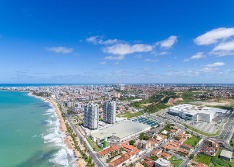
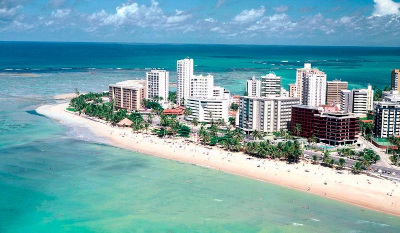
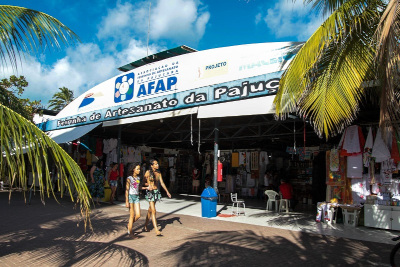
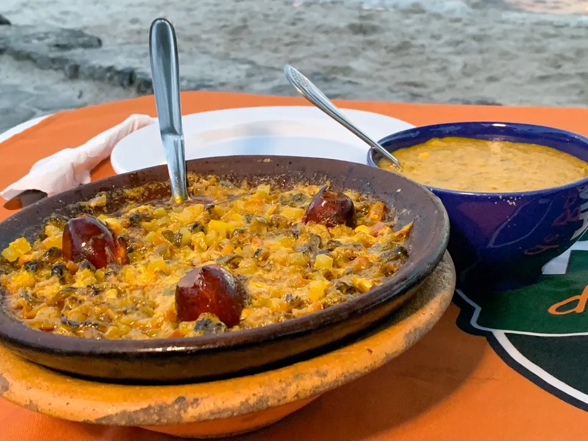
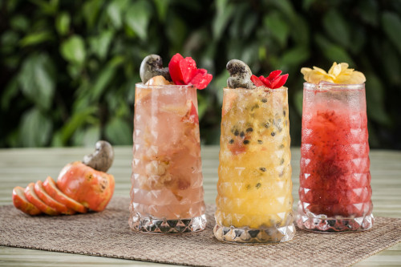

Maceió
Maceió, a capital do estado de Alagoas, é uma cidade que encanta com suas praias paradisíacas, cultura rica e hospitalidade calorosa.
Conhecida como o "Paraíso das Águas", Maceió oferece uma combinação única de beleza natural e patrimônio histórico, tornando-a um destino acolhedor
para pessoas de todas as idades.

Praia de Pajuçara - Maceió
Praia de Ponta Verde
A Praia de Ponta Verde é uma das praias mais famosas de Maceió. Com suas águas cristalinas e areias douradas,
é o local perfeito para relaxar e aproveitar o sol. Você também encontrará uma variedade de bares e restaurantes à beira-mar,
onde pode saborear a deliciosa culinária local. Além disso, a praia é famosa por seu belo calçadão, ideal para caminhadas e passeios à noite.

Feira de Artesanato da Pajuçara
A Feira de Artesanato da Pajuçara é um local vibrante, onde os visitantes podem encontrar produtos artesanais locais, desde roupas a lembranças únicas.
É uma experiência única para os amantes do artesanato e da cultura regional. Além disso, a feira é o lugar perfeito para aprender sobre a rica
história e tradições de Alagoas por meio das obras de arte e artesanato local.

Sururu com Pirão
O Sururu com Pirão é um prato típico de Maceió, feito com um molusco chamado sururu, que é cozido com temperos e servido com um delicioso
pirão de farinha de mandioca. É uma iguaria que representa a culinária alagoana e suas influências indígenas e africanas.
Esse prato é uma verdadeira explosão de sabores locais e é uma obrigação para quem deseja experimentar a autêntica cozinha de Alagoas.

Caipirinha de Caju
A caipirinha de caju é uma bebida refrescante e saborosa, feita com caju, limão, açúcar e cachaça.
É uma opção popular para se refrescar nas praias de Maceió e apreciar os sabores locais.
Essa bebida tropical é a combinação perfeita de doçura e acidez e é uma escolha refrescante para acompanhar as refeições ou
relaxar em um dia ensolarado na praia.
